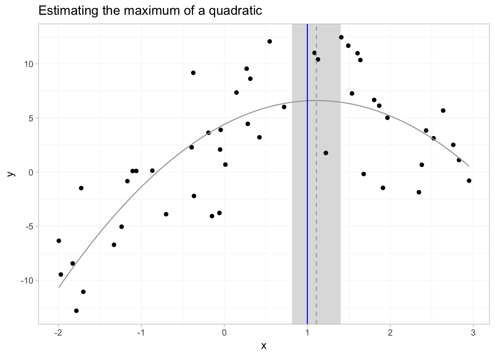

Section 9: Standard errors, Vol. I
Admin
Last week
Last week we discussed the asymptotic properties of the OLS estimator under a more general set of assumptions.
Follow-up: At the end of last week’s section, we discussed OLS’s asymptotic behavior with infinite-variance, Pareto-distributed disturbances. I suggested that the strange behavior was because we had not yet reached asymptopia. This suggestion was only sort of correct: with the infinite-variance specification of Pareto distribution, we will never reach asymptopia—no matter how large our sample size becomes. The reason: think back to the Lindeberg-Levy Central Limit Theorem… we need finite-variance disturbances to get
\[ \frac{1}{\sqrt{\mathstrut N}} \left( \sum_i^N \mathbf{x}_i^\prime \varepsilon_i \right) \overset{d}{\longrightarrow} \mathop{N}\left( 0, \boldsymbol{\Upsilon} \right) \]
Put simply: no convergence without finite-variance.
Current problem sets
Due this Friday and next Wednesday. Again, please try to submit in a way where your answers are outside of and clearly distinguishable from your R code. And please include the R code for each problem along with the problem (unless it draws upon something you already calculated—no need to copy the same code 100 times).
This week
Standard errors. Specifically standard errors of linear and nonlinear combinations of OLS-estimated parameters, which will bring us to the Delta Method. Finally: making (pretty) tables.
What you will need
Packages:
- New! (You probably need to install these packages):
gmodelsfor its functionestimable()msmfor its Delta Method functiondeltamethod()
- Previously used:
dplyr,readr,magrittr,lfe,ggplot2,ggthemes
Data: The auto.csv file (again).
Standard errors
As we discussed previously, inference is tremendously important in econometrics. And at the heart of inference is the issue of calculating standard errors. Why? If we want to test the significance of our estimates—or if we want to construct a confidence interval for our estimates or predictions—then we need to calculate (estimate) the variance around our point estimates. And what is the standard deviation of an estimator? Its standard error.
Setup
Let’s set up R and load our functions and data.
Setup and data
# Setup ----
# Options
options(stringsAsFactors = F)
options(scipen = 10)
# Packages
library(readr)
library(lfe)
library(dplyr)
library(magrittr)
library(parallel)
library(ggplot2)
library(viridis)
library(gmodels)
library(msm)
# Directory
setwd("/Users/edwardarubin/Dropbox/Teaching/ARE212/Section09")
# My ggplot2 theme
theme_ed <- theme(
legend.position = "bottom",
panel.background = element_rect(fill = NA),
panel.border = element_rect(fill = NA, color = "grey75"),
axis.ticks = element_line(color = "grey85"),
panel.grid.major = element_line(color = "grey95", size = 0.2),
panel.grid.minor = element_line(color = "grey95", size = 0.2),
legend.key = element_blank())
# Load data ----
cars <- read_csv("auto.csv")Functions
# Functions ----
# Function to convert tibble, data.frame, or tbl_df to matrix
to_matrix <- function(the_df, vars) {
# Create a matrix from variables in var
new_mat <- the_df %>%
# Select the columns given in 'vars'
select_(.dots = vars) %>%
# Convert to matrix
as.matrix()
# Return 'new_mat'
return(new_mat)
}
# Function for OLS coefficient estimates
b_ols <- function(y, X) {
# Calculate beta hat
beta_hat <- solve(t(X) %*% X) %*% t(X) %*% y
# Return beta_hat
return(beta_hat)
}
# Function for OLS coef., SE, t-stat, and p-value
ols <- function(data, y_var, X_vars) {
# Turn data into matrices
y <- to_matrix(data, y_var)
X <- to_matrix(data, X_vars)
# Add intercept
X <- cbind(1, X)
# Calculate n and k for degrees of freedom
n <- nrow(X)
k <- ncol(X)
# Estimate coefficients
b <- b_ols(y, X)
# Update names
rownames(b)[1] <- "Intercept"
# Calculate OLS residuals
e <- y - X %*% b
# Calculate s^2
s2 <- (t(e) %*% e) / (n-k)
# Inverse of X'X
XX_inv <- solve(t(X) %*% X)
# Standard error
se <- sqrt(s2 * diag(XX_inv))
# Vector of _t_ statistics
t_stats <- (b - 0) / se
# Calculate the p-values
p_values = pt(q = abs(t_stats), df = n-k, lower.tail = F) * 2
# Nice table (data.frame) of results
results <- data.frame(
# The rows have the coef. names
effect = rownames(b),
# Estimated coefficients
coef = as.vector(b),
# Standard errors
std_error = as.vector(se),
# t statistics
t_stat = as.vector(t_stats),
# p-values
p_value = as.vector(p_values)
)
# Return the results
return(results)
}Tables
Suppose we want to estimate the following model.
\[ \text{Price}_i = \beta_0 + \beta_1 \text{MPG}_i + \beta_2 \text{Weight}_i + \varepsilon_i \]
We know how to calculate the coefficients, the standard errors, the t statistics, and the p-values, e.g.,
# Regress price on MPG and weight
ols(cars, "price", c("mpg", "weight"))## effect coef std_error t_stat p_value
## 1 Intercept 1946.068668 3597.0495988 0.5410180 0.590188628
## 2 mpg -49.512221 86.1560389 -0.5746808 0.567323727
## 3 weight 1.746559 0.6413538 2.7232382 0.008129813Can we make the results a bit prettier? Let’s grab the results and feed them to the kable() function from the knitr package.
# Regress price on MPG and weight
ols(cars, "price", c("mpg", "weight")) %>%
knitr::kable()| effect | coef | std_error | t_stat | p_value |
|---|---|---|---|---|
| Intercept | 1946.068668 | 3597.0495988 | 0.5410180 | 0.5901886 |
| mpg | -49.512221 | 86.1560389 | -0.5746808 | 0.5673237 |
| weight | 1.746559 | 0.6413538 | 2.7232382 | 0.0081298 |
Not bad, but we can do more.
# Regress price on MPG and weight
tmp_results <- ols(cars, "price", c("mpg", "weight"))[,2:5]
row.names(tmp_results) <- c("Intercept", "MPG", "Weight")
knitr::kable(tmp_results,
digits = c(2, 2, 2, 3),
col.names = c("$\\widehat{\\boldsymbol{\\beta}}$", "S.E.",
"___t___ stat", "___p___-Value"),
row.names = T,
caption = "Regressing price on mileage and weight"
)| \(\widehat{\boldsymbol{\beta}}\) | S.E. | t stat | p-Value | |
|---|---|---|---|---|
| Intercept | 1946.07 | 3597.05 | 0.54 | 0.590 |
| MPG | -49.51 | 86.16 | -0.57 | 0.567 |
| Weight | 1.75 | 0.64 | 2.72 | 0.008 |
Because I write the section notes in Rmarkdown, I am making use of Markdown formatting within the column names (e.g., ___t___ creates a bolded, italicized t, i.e., t). If you want LaTeX formatting, then you can set the format option to "latex", to generate the LaTeX code for a table. You will also want to set escape = F if you want knitr to print the table as a table with LaTeX math expressions inside. I’m also using the booktabs = T argument, which creates prettier tables in LaTeX but also requires adding \usepackage{booktabs} to your preamble.
# Regress price on MPG and weight
tmp_results <- ols(cars, "price", c("mpg", "weight"))[,2:5]
row.names(tmp_results) <- c("Intercept", "MPG", "Weight")
knitr::kable(tmp_results,
format = "latex",
digits = c(2, 2, 2, 3),
col.names = c("$\\widehat{\\boldsymbol{\\beta}}$", "S.E.",
"$t$ stat", "$p$-Value"),
escape = F,
row.names = T,
caption = "Regressing price on mileage and weight",
booktabs = T
) %>% print()## \begin{table}
##
## \caption{\label{tab:unnamed-chunk-6}Regressing price on mileage and weight}
## \centering
## \begin{tabular}[t]{lrrrr}
## \toprule
## & $\widehat{\boldsymbol{\beta}}$ & S.E. & $t$ stat & $p$-Value\\
## \midrule
## Intercept & 1946.07 & 3597.05 & 0.54 & 0.590\\
## MPG & -49.51 & 86.16 & -0.57 & 0.567\\
## Weight & 1.75 & 0.64 & 2.72 & 0.008\\
## \bottomrule
## \end{tabular}
## \end{table}I’m using the print() function above to tell my Rmarkdown compiler to print to code for the table—as opposed to attempting to create the table (so you can see the code). You don’t need the print().
This is about as far as knitr and kable() can take us in table creation. For more features, I suggest the packages stargazer and/or xtable. (For a future section.)
Linear combinations
Okay, so we know how to calculate the standard error for out point estimates of the coefficients. What if we would like to know the average “effect” on price for 20 MPG and 3,000 pounds?1 Let us call this “mean effect” \(lc\) (for linear combination). Thus, we are interested in \(lc = 20\beta_1 + 3000\beta_2\). We will estimate \(lc\) via
\[ \widehat{LC} = 20\times b_1 + 3000\times b_2 \]
# Regress price on mpg and weight
reg1 <- ols(cars, "price", c("mpg", "weight"))
# lc = 20 * b1 + 3000 * b2
(lc <- 20 * reg1[2,2] + 3000 * reg1[3,2])## [1] 4249.433Aside: Wrapping the definition of an object in parentheses forces R to print the object’s value.
We have a point estimate. We’re done, right? Noooooo! Point estimates without standard errors should make you a bit suspicious. How precisely estimated is the point estimate? Is there any evidence it is significantly different from zero?
So how can we get a standard error for this point estimate? There are two common routes—an analytical route and the Delta-Method route.
Route 1: Analytical variance
Let’s revisit the definition of a standard error. When defined the standard error of \(\mathbf{b}\), as
\[\text{se}(\mathbf{b}) = \sqrt{\text{Var}\left( \mathbf{b} \right)}\]
More generally, the standard error of an arbitrary estimator \(\theta\) is simply
\[\text{se}(\mathbf{\theta}) = \sqrt{\text{Var}\left( \mathbf{\theta} \right)}\]
Thus, if we want the standard error of \(\widehat{LC}\), we really need know the variance of \(\widehat{LC}\). So what is the variance of \(\widehat{LC}\)?
\[ \mathop{\text{Var}} \left( \widehat{LC} \right) = \mathop{\text{Var}} \left( 20 b_1 + 3000 b_2 \right) \]
Now let’s think way back to elementary statistics. There are a few relationships that will be useful here:
\[ \mathop{\text{Var}} \left( aX \right) = a^2 \mathop{\text{Var}} \left( X \right) \]
\[ \mathop{\text{Var}} \left( X + Y \right) = \mathop{\text{Var}} \left( X \right) + \mathop{\text{Var}} \left( Y \right) + \mathop{\text{Cov}} \left(X,Y\right) \]
\[ \mathop{\text{Cov}} \left( aX,bY \right) = ab \mathop{\text{Cov}} \left( X,Y \right)\]
which leaves us with
\[ \mathop{\text{Var}} \left( aX + bY \right) = a^2 \mathop{\text{Var}} \left( X \right) + b^2 \mathop{\text{Var}} \left( Y \right) + 2ab \mathop{\text{Cov}} \left(X,Y\right) \]
Now we can apply this knowledge to \(\mathop{\text{Var}} \left( \widehat{LC} \right)\):
\[ \mathop{\text{Var}} \left( \widehat{LC} \right) = 20^2 \mathop{\text{Var}} \left( b_1 \right) + 3000^2 \mathop{\text{Var}} \left( b_2 \right) + 2 \times 20 \times 3000 \mathop{\text{Cov}} \left( b_1, b_2 \right)\]
Lucky for us, we’ve already calculated estimates for \(\mathop{\text{Var}} \left( b_1 \right)\), \(\mathop{\text{Var}} \left( b_2 \right)\), and \(\mathop{\text{Cov}} \left( b_1, b_2 \right)\): they are (some of) the elements of \(s^2 \left(\mathbf{X}^\prime \mathbf{X}\right)^{-1}\). (Specifically, they are the elements of the variance-covariance matrix once we remove the first row and column.)
Let’s write a quick function that returns the variance-covariance matrix of \(\mathbf{b}\):
# Variance-covariance function for OLS beta hat
vcov_ols <- function(data, y_var, X_vars) {
# Turn data into matrices
y <- to_matrix(data, y_var)
X <- to_matrix(data, X_vars)
# Add intercept
X <- cbind(1, X)
# Label intercept
colnames(X)[1] <- "intercept"
# Calculate n and k for degrees of freedom
n <- nrow(X)
k <- ncol(X)
# Estimate coefficients
b <- b_ols(y, X)
# Calculate residuals
e <- y - X %*% b
# Calculate s2 and convert to scalar
s2 <- (t(e) %*% e / (n - k)) %>% as.vector()
# Calculate the variance-covariance matrix
vcov_mat <- s2 * solve(t(X) %*% X)
# Return the variance-covariance matrix
return(vcov_mat)
}First, let’s make sure our function works.
# Run the vcov_ols() function
vcov_ols(cars, "price", c("mpg", "weight"))## intercept mpg weight
## intercept 12938765.816 -292759.82264 -2191.9031965
## mpg -292759.823 7422.86303 44.6016592
## weight -2191.903 44.60166 0.4113347This matrix contains our estimates for
\[\mathop{\text{Var}} \left( \mathbf{b} \right) = \left[\begin{array}{ccc} \mathop{\text{Var}} \left( b_0 \right) & \mathop{\text{Cov}} \left( b_0, b_1 \right) & \mathop{\text{Cov}} \left( b_0, b_2 \right) \\ \mathop{\text{Cov}} \left( b_0, b_1 \right) & \mathop{\text{Var}} \left( b_1 \right) & \mathop{\text{Cov}} \left( b_0, b_2 \right) \\ \mathop{\text{Cov}} \left( b_0, b_2 \right) & \mathop{\text{Cov}} \left( b_1, b_2 \right) & \mathop{\text{Var}} \left( b_2 \right) \end{array}\right] \]
Looks great. Now let’s calculate the (analytical) standard error for \(\widehat{LC}\).
# Regress price on mpg and weight
reg1 <- ols(cars, "price", c("mpg", "weight"))
# lc = 20 * b1 + 3000 * b2
(lc <- 20 * reg1[2,2] + 3000 * reg1[3,2])## [1] 4249.433# The variance-covariance matrix
vcov1 <- vcov_ols(cars, "price", c("mpg", "weight"))
# The standard error for 'lc'
(lc_se <- sqrt(20^2 * vcov1[2,2] + 3000^2 * vcov1[3,3] +
2 * 20 * 3000 * vcov1[2,3]))## [1] 3467.471Let’s check our work using the canned lm() function in conjunction with the estimable() function2 from the gmodels package that we previously loaded.3 The estimable() function estimates the point estimate and the standard error for a linear combination of coefficients from an estimated model object obj. We pass estimable() the linear combination via its argument cm. In our case, cm = c(0, 20, 3000), meaning we do not want the intercept, we want to multiply \(b_1\) coefficient by 20, and we want to multiply the third coefficient \(b_2\) by 3,000.
# Estimate the model with 'lm'
lm_est <- lm(price ~ mpg + weight, data = cars)
# Estimate the linear combination
estimable(obj = lm_est, cm = c(0, 20, 3000))## Estimate Std. Error t value DF Pr(>|t|)
## (0 20 3000) 4249.433 3467.471 1.225514 71 0.2244315# Alternative test (no standard errors, though)
waldtest(lm_est, ~ 20 * mpg + 3000 * weight)## p chi2 df1 p.F F df2
## 0.2203818 1.5018836 1.0000000 0.2244315 1.5018836 71.0000000
## attr(,"formula")
## ~20 * mpg + 3000 * weight
## <environment: 0x7f849fac2a30>I’ve also added lfe’s waldtest() function. It gives a point estimate and tests against zero but does not provide a standard error.
How could we build our own t statistic?
# Our t statistic
lc / lc_se## [1] 1.225514Quick summary: our point estimate, while seemingly large, is not significantly different from zero.
Route 2: Delta Method
There are times where you either cannot (or do not want to) solve analytically for the variance of your estimator. Enter: the Delta Method.
The Delta Method can look a bit intimidating, but if you stick with me through the math, you will find it actually is not too bad.
Take an arbitrary function \(\mathbf{a(\cdot)}:\mathbb{R}^K\rightarrow \mathbb{R}^r\) (whose first derivatives exist and are continuous). (This \(\mathbf{a}(\cdot)\) is generally going to be some sort of function of our coefficients.)
Now define \(\mathbf{A}(\boldsymbol{\beta})\) as the \(r\times k\) matrix of first derivatives, evaluated at \(\boldsymbol{\beta}\),
\[ \mathop{\mathbf{A}}\left(\boldsymbol{\beta}\right) = \dfrac{\partial \mathop{\mathbf{a}}\left(\boldsymbol{\beta}\right)}{\partial \boldsymbol{\beta}^\prime} \]
Now take a sequence of \(k\)-dimensional random vectors \(\{\mathbf{x}_N:\: N=1,\,2,\,\ldots\}\), where
\[ \mathbf{x}_N\overset{p}{\rightarrow}\boldsymbol{\beta} \]
and
\[ \sqrt{\mathstrut N}\left(\mathbf{x}_N - \boldsymbol{\beta}\right) \overset{d}{\longrightarrow} \mathop{N}\left(\boldsymbol{0}, \boldsymbol{\Sigma}\right) \]
This “sequence” will generally be our (OLS) estimator (it converges to \(\boldsymbol{\beta}\) and is asymptotically normal).
If we satisfy these conditions, then
\[ \sqrt{\mathstrut N} \big( \mathop{\mathbf{a}}\left( \mathbf{x}_N \right) - \mathop{\mathbf{a}}(\boldsymbol{\beta}) \big) \overset{d}{\longrightarrow} N \big( \mathbf{0}, \mathop{\mathbf{A}}(\boldsymbol{\beta})\boldsymbol{\Sigma}\mathop{\mathbf{A}}(\boldsymbol{\beta})^\prime \big) \]
So what does all of this math (the Delta Method) mean?
Imagine we want to estimate some function of unknown parameters \(\mathop{\mathbf{a}}(\boldsymbol{\beta})\). The Delta Method tells us that if we have some estimator (sequence) \(\mathbf{x}_N\) that is consistent for \(\boldsymbol{\beta}\) and asymptotically normal—and if the first derivatives of \(\mathop{\mathbf{a}}(\cdot)\) exist and are continuous at \(\boldsymbol{\beta}\)—then
- \(\mathop{\mathbf{a}}\left( \mathbf{x}_N \right)\) is consistent for \(\mathop{\mathbf{a}}\left( \boldsymbol{\beta} \right)\), i.e., we can plug our estimates for \(\boldsymbol{\beta}\) into \(\mathbf{a}(\cdot)\) to estimate \(\mathop{\mathbf{a}}\left( \mathbf{x}_N \right)\)
- The variance-covariance matrix of this new estimator \(\mathbf{a}\left( \mathbf{x}_N \right)\) is \(\mathop{\mathbf{A}}(\boldsymbol{\beta})\boldsymbol{\Sigma}\mathop{\mathbf{A}}(\boldsymbol{\beta})^\prime\). In practice, we need to take derivatives of \(\mathbf{a}(\cdot)\) with respect to \(\boldsymbol{\beta}\) and then plug in estimates.
Let’s see what the Delta Method looks like in an actual application.
Recall our function of unknown parameters
\[ \mathop{\mathbf{a}}(\boldsymbol{\beta}) = LC = 20\beta_1 + 3000\beta_2 \]
and its estimator
\[ \mathop{\mathbf{a}}(\mathbf{x}_N) = \mathop{\mathbf{a}}(\mathbf{b}_\text{OLS}) = \widehat{LC} = 20 \times b_1 + 3000 \times b_2 \]
Do we satisfy the requirements of the Delta Method?
- We know \(\mathbf{b}_\text{OLS}\) is consistent for \(\boldsymbol{\beta}\)
- We also know \(\sqrt{\mathstrut N}\left(\mathbf{b}_\text{OLS} - \boldsymbol{\beta}\right) \overset{d}{\longrightarrow} \mathop{N}\left(\boldsymbol{0}, \sigma^2 \left(\mathbf{X}^\prime \mathbf{X}\right)^{-1} \right)\)
- The continuous-derivatives condition is satisfied, as
\[ \mathop{\mathbf{A}}\left(\boldsymbol{\beta}\right) = \dfrac{\partial \mathop{\mathbf{a}}\left(\boldsymbol{\beta}\right)}{\partial \boldsymbol{\beta}^\prime} = \dfrac{\partial (20\beta_1 + 3000\beta_2)}{\partial [\beta_0,\, \beta_1,\, \beta_2]} = \left[\begin{array}{ccc} 0 & 20 & 3000 \end{array} \right]\]
Let’s name this derivative matrix \(\mathbf{LC}_\beta\).
Because we satisfy these conditions, we can apply the Delta Method, i.e.,
\[ \sqrt{\mathstrut N} \big(\widehat{LC} - LC\big) \overset{d}{\longrightarrow} \mathop{N}\big(0, \mathbf{LC}_\beta \cdot \sigma^2 \left(\mathbf{X}^\prime \mathbf{X}\right)^{-1} \cdot \mathbf{LC}_\beta^\prime \big) \]
Alright! We made it. Now let’s put this last statement in code (estimating \(\sigma^2\) with \(s^2\)).
# Remind ourselves of LC and its var-cov matrix
lc <- 20 * reg1[2,2] + 3000 * reg1[3,2]
vcov1 <- vcov_ols(cars, "price", c("mpg", "weight"))
# Define our derivative matrix
deriv_mat <- matrix(c(0, 20, 3000), nrow = 1)
# Calculate the standard error of 'lc' via delta method
lc_dm <- sqrt(deriv_mat %*% vcov1 %*% t(deriv_mat))Finally, let’s compare the two sets of standard errors—analytical and Delta Method
# Analytical s.e.
lc_se## [1] 3467.471# Delta Method s.e.
lc_dm## [,1]
## [1,] 3467.471They’re the same?!?!4 Before you decide that at least one of the last two sections/methods was pointless, you should know that the previous example with \(LC\) was a special case: we had a linear combination of the coefficients. When you have a linear combination of coefficients, the standard errors calculated by the two different methods will match. When you deviate from linear combinations of the coefficients, the methods will provide different estimates (assuming you can derive the analytical variance at all).
Let’s see an example.
Nonlinear combinations
Suppose we have the data-generating process
\[ y_i = \beta_0 + \beta_1 x_i + \beta_2 x_2^2 + \varepsilon_i \]
OLS can handle estimating this quadratic function just fine. However, what if we want to know which value of \(x\) maximizes \(y\)? Assuming \(\beta_2 > 0\), this function reaches its maximum at
\[ x^\text{M} = - \dfrac{\beta_1}{2 \beta_2} \]
This relationship between \(\beta_1\) and \(\beta_2\) is clearly not linear in the coefficients. Thus, while we can easily estimate \(x^\text{M}\) via
\[\widehat{x}^\text{M} = - \dfrac{b_1}{2 b_2} \]
we would have a very difficult time deriving the analytical variance of this estimator. However, the Delta Method provides us with a much nicer alternative.
A bit more formally, in this example,
\[ \mathop{\mathbf{a}}(\boldsymbol{\beta}) = x^\text{M} = - \dfrac{\beta_1}{2 \beta_2} \]
which means
\[ \mathop{\mathbf{A}}(\boldsymbol{\beta}) = \dfrac{\partial x^\text{M}}{\partial \boldsymbol{\beta}^\prime} = \left[\begin{array}{ccc} \dfrac{\partial x^\text{M}}{\partial \beta_0} & \dfrac{\partial x^\text{M}}{\partial \beta_1} & \dfrac{\partial x^\text{M}}{\partial \beta_2} \end{array}\right] = \left[\begin{array}{ccc} 0 & - \dfrac{1}{2\beta_2} & \dfrac{\beta_1}{2 \beta_2^2} \end{array}\right] \]
Let’s bake some fake data and estimate this model. We will generate \(x\) from a uniform distribution between -2 and 3; we will generate our disturbances from a normal distribution with mean zero and variance 10. We will define \(y = 4 + 4 x_i - 2 x_i^2 + \varepsilon_i\).
# Set the seed
set.seed(12345)
# Set the size
n <- 50
# Generate data
fake_df <- data.frame(
x = runif(n = n, min = -2, max = 3),
e = rnorm(n = n, mean = 0, sd = sqrt(10))
) %>% tbl_df()
# Calculate y = 4 + 4x - 2x^2 + e
fake_df %<>% mutate(
x2 = x^2,
y = 4 + 4 * x - 2 * x^2 + e)Now we calculate \(\mathbf{b}_\text{OLS}\) and the variance-covariance matrix of the OLS estimator
# Estimate coefficients
(b_fake <- ols(fake_df, "y", c("x", "x2")) %$% coef)## [1] 4.403845 3.975403 -1.792509# Estimate var-cov matrix
v_fake <- vcov_ols(fake_df, "y", c("x", "x2"))Next, we substitute our estimates for \(\beta_1\) and \(\beta_2\) into \(\mathop{\mathbf{A}}(\boldsymbol{\beta})\) (the first-derivates matrix).
# Create the A matrix
A_fake <- matrix(data = c(
# The first entry of A()
0,
# The second entry of A()
-1/(2 * b_fake[3]),
# The third entry of A()
b_fake[2]/(2 * b_fake[3]^2)),
nrow = 1)Finally, we calculate \(\widehat{x}^\text{M} = \mathop{\mathbf{a}}(\mathbf{b}_\text{OLS})\) and approximate5 its standard error, using the Delta Method as we derived above
# Our estimate for the x that maximizes y
(x_m <- - b_fake[2] / (2 * b_fake[3]))## [1] 1.108893# Our estimate for the standard error
(se_m <- sqrt(A_fake %*% v_fake %*% t(A_fake)))## [,1]
## [1,] 0.1488887Let’s confirm our results using some canned functions. We can estimate the coefficients with felm() and then calculate the Delta-Method based standard errors using the deltamethod() function from the msm package. The deltamethod() function wants three things:
g, a formula that relates the coefficients/parameters in terms ofx1,x2, …, e.g., we have have three parameters \(\beta_0,\, \beta_1\, \beta_2\) which we want to relate via \(-\beta_1 / (2\beta_2)\), so our formula is~ - x2 / (2 * x3). Apologies for the subscripts being off by a number.mean, our estimates for the parameterscov, the variance-covariance matrix of the parameters
# Estimate the equation
felm_fake <- felm(y ~ x + x2, data = fake_df)
# Use the 'deltamethod' function
deltamethod(g = ~ - x2 / (2 * x3),
mean = coef(felm_fake),
cov = vcov(felm_fake))## [1] 0.1488887# Print the value we caluclated above
se_m## [,1]
## [1,] 0.1488887We’re good.
To get a better picture of what we’ve just done, let’s plot a few things:
- our data
- the predicted function, \(\hat{f}(x) = \hat{\beta_0} + \hat{\beta_1} x + \hat{\beta_2} x^2\)
- the true maximum (\(x^\text{M} = 1\))
- the predicted maximum with its 95% confidence interval
# Our plot
ggplot(data = fake_df) +
# 95% confidence interval for maximal x
geom_rect(aes(ymin = -Inf, ymax = Inf,
xmin = x_m - 1.96 * se_m, xmax = x_m + 1.96 * se_m),
fill = "grey90", alpha = 0.05) +
# Plot the points
geom_point(aes(x = x, y = y)) +
# Plot the predicted function
stat_function(fun = function(x) {
b_fake[1] + b_fake[2] * x + b_fake[3] * x^2
}, color = "grey65") +
# Vertical line at the predicted max.
geom_vline(xintercept = x_m, color = "grey65", linetype = 2) +
# Vertical line at the true max.
geom_vline(xintercept = 1, color = "blue") +
# Title
ggtitle("Estimating the maximum of a quadratic") +
# Theme
theme_ed
In this figure, the solid grey line is predicted function; the solid blue vertical line shows the \(x\) that sits at the true maximum; the dotted grey line gives the estimated \(x\) that maximizes \(y\); and the shaded grey region gives the 95% confidence interval for this \(x\) that maximizes \(y\).
Fun tools: Mendeley
Mendeley is a (free) reference manager and viewer. I know that doesn’t sound too interesting, so let me elaborate. Mendeley allows you to read, annotate, highlight, organize, and share articles, books, and other references for your research. You can also search for existing or new papers (by author, title, year, notes…). Not only does it provide a centralized system for both your references and your notes on your references, Mendeley also allows you to assign these references to (multiple) projects—so you can have all your papers for a given topic/project linked together. Mendeley links them in a way that does not duplicate the files, so if a file exists in multiple projects, you can easily spread your notes across the projects. Mendeley also syncs across your devices, so you can read the same paper and same annotations on your tablet, laptop, phone, etc. Last, but not least, Mendeley will export reference documents for LaTeX, BibTeX, and Word/plain text (for a single document or for a whole project).
See Mendeley’s own description of its features here.
 Mendeley screenshot.
Mendeley screenshot.
More
Finally, this simulation is cool.
The reason for the quotation marks around effect is that we are not estimating causal effects in this regression. However, because this class (and section) is not about causal inference, we will for the moment pretend the effects are causal.↩
Equivalent of Stata’s
lincom.↩While
estimable()works with many classes of objects—lm,glm,lme,geese—it does not work withfelmclass objects. Thus we are working withlm()today. You can use your knowledge of the Frisch-Waugh-Lovell theorem to take care of your fixed effects and then uselm()for the final regression if you want to useestimable()… or you can just do the test yourself, sincefelm()gives you coefficient estimates and a variance-covariance matrix.↩I debated here whether the question mark should preced the exclamation mark.↩
The Delta Method provides a first-order approximation.↩